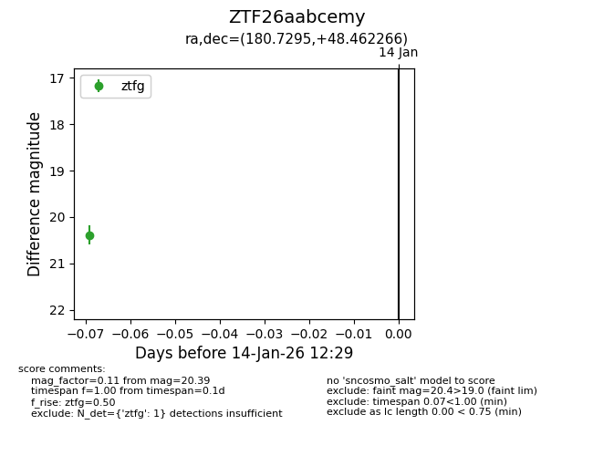
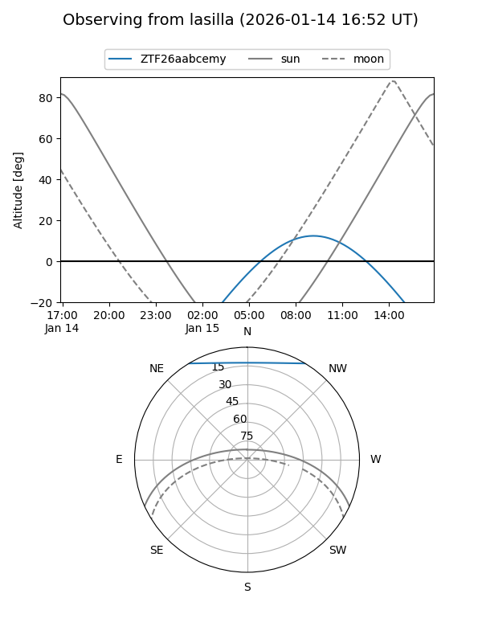
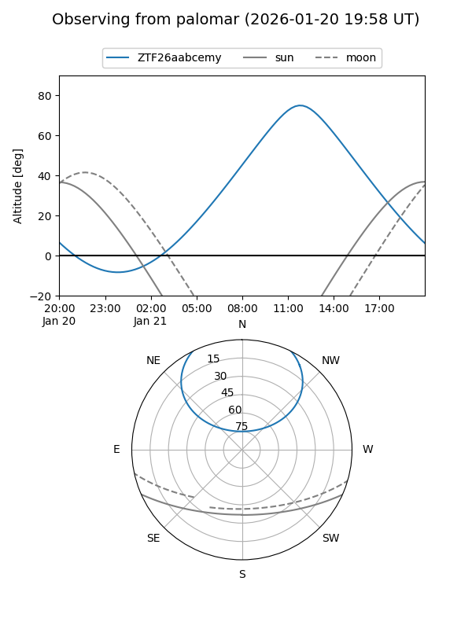
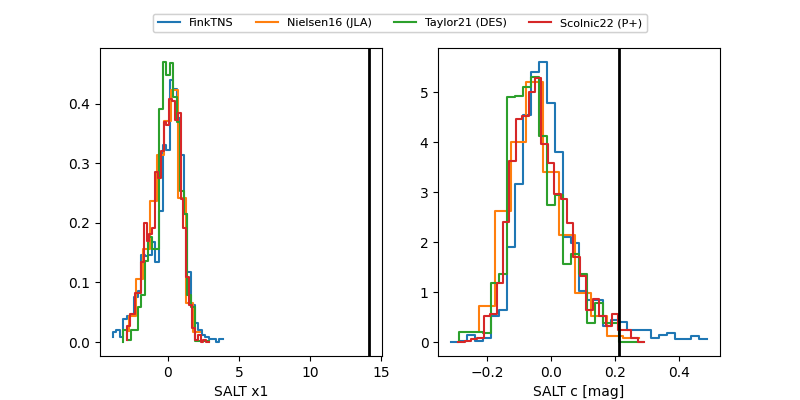

ZTF26aabcemy
Target ZTF26aabcemy at 2026-01-14 12:30
Aliases and brokers:
FINK: link
Lasair: link
ALeRCE: link
alt names
ZTF26aabcemy (ztf,fink_ztf)
Coordinates:
equatorial (ra, dec) = 180.7295,+48.46227
equatorial (HMS+DMS) = 12:02:55.08,+48:27:44.16
galactic (l, b) = (143.5397,+66.67868)
Flags:
Photometry:
last ztfg=20.39
1 ztfg detections
Lightcurve

Visibility


Additional plots
